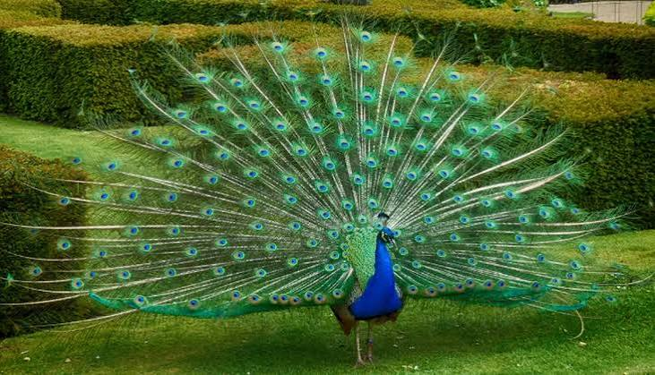
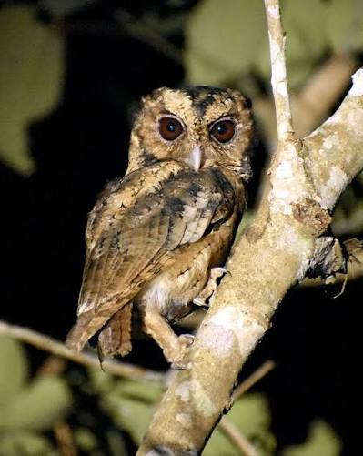
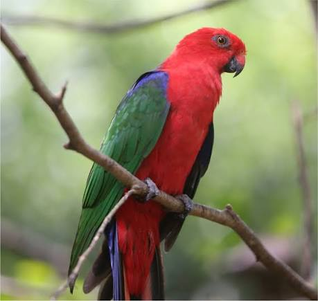
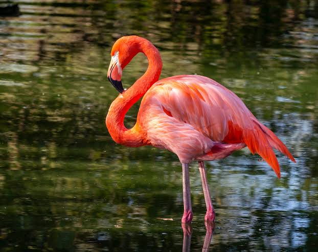
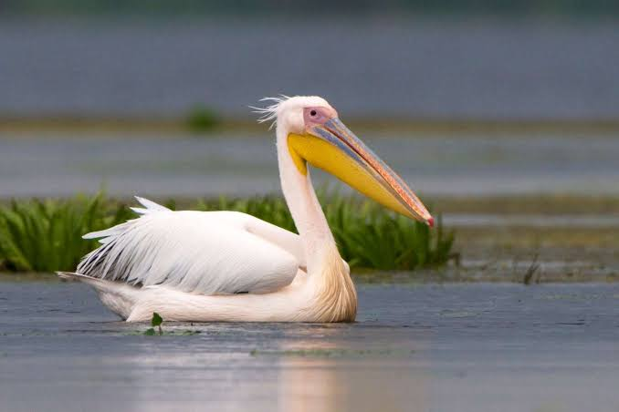
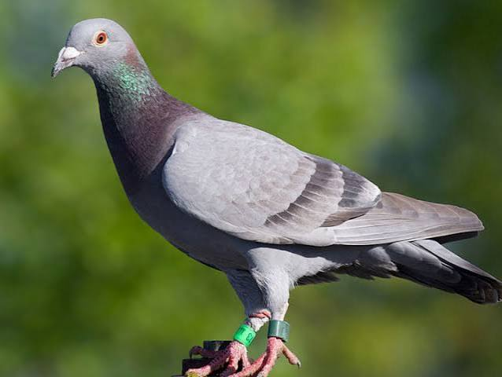
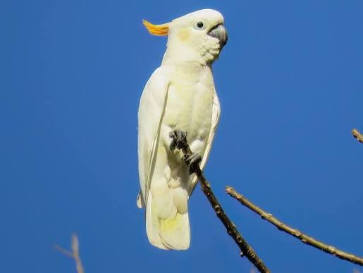

Birds Gallery
Mari mengenal berbagai jenis burung yang ada di dunia!
Elang
Elang adalah burung pemangsa yang memiliki paruh tajam dan cakar yang kuat. Hewan ini memiliki penglihatan sangat tajam sehingga mampu melihat mangsa dari jarak jauh. Elang biasanya hidup di pegunungan, hutan, dan daerah terbuka.

Merak
Merak adalah burung yang terkenal karena keindahan bulunya yang berwarna-warni. Merak jantan memiliki ekor panjang yang dapat dikembangkan seperti kipas untuk menarik perhatian betina. Burung ini memiliki penampilan yang sangat menarik dan sering dijadikan simbol keindahan.

Burung Hantu
Burung hantu adalah burung pemangsa yang biasanya aktif pada malam hari. Hewan ini memiliki mata besar, pendengaran tajam, dan kemampuan terbang hampir tanpa suara. Burung hantu dapat memutar kepalanya hingga sekitar 270 derajat.

Burung Nuri
Burung nuri adalah burung yang memiliki bulu berwarna cerah dan indah, seperti merah, hijau, dan kuning. Hewan ini memiliki paruh kuat serta kemampuan menirukan berbagai suara. Burung nuri banyak ditemukan di wilayah tropis, termasuk Indonesia.

Flamingo
Flamingo adalah burung yang memiliki bulu berwarna merah muda, kaki panjang, dan leher melengkung. Hewan ini biasanya hidup berkelompok di danau dangkal, rawa, dan perairan asin. Flamingo sering berdiri dengan satu kaki ketika beristirahat.

Pelikan
Pelikan adalah burung air yang memiliki paruh panjang dengan kantong besar di bagian bawahnya. Kantong tersebut digunakan untuk menangkap dan menampung ikan. Pelikan biasanya hidup di sekitar danau, sungai, dan pantai serta memakan ikan kecil.

Merpati
Merpati adalah burung yang memiliki tubuh sedang, sayap kuat, dan bulu dengan berbagai warna. Hewan ini dikenal memiliki kemampuan mengingat arah dan menemukan jalan kembali ke tempat asalnya. Merpati telah lama dimanfaatkan manusia sebagai burung pengantar pesan.

Kakatua
Kakatua adalah burung yang memiliki jambul khas di atas kepalanya dan paruh yang kuat. Burung ini dikenal cerdas serta mampu menirukan berbagai suara. Kakatua dapat mengangkat dan menurunkan jambulnya sesuai dengan suasana hatinya.